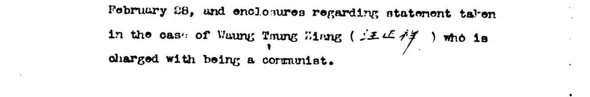

What this edition gets wrong, how we know, and how we detect it. 本站转录会错在哪里、我们怎么知道、以及如何自动定位。
English
中文
This page documents the failure modes of this edition, with measured data. Publishing our errors is not a disclaimer but a precondition for using this material responsibly — a reader needs to know which fields can be trusted and which must be checked against the original scan.
本页公开本项目的失败模式与实测数据。公开错误不是免责， 而是让这批材料可被负责任地使用的前提——使用者需要知道哪些字段可信、 哪些必须回原件核对。
English
中文
Two quite different systems have read these pages, and they fail in opposite ways. Keeping them apart is the single most important thing to understand about this site.
这批档案先后被两套完全不同的系统读过，而它们的出错方式恰好相反。 分清这两者，是理解本站最重要的一件事。
| IA-OCRInternet Archive 上原有的 OCR | This edition本站的大模型转录 | |
|---|---|---|
| What it is是什么 | A conventional character recogniser, run in 2024 for English only. 传统逐字识别，2024 年只按英文跑过一遍。 | A vision language model reading each page at native scanning resolution. 视觉大模型，以原生扫描分辨率逐页阅读。 |
| How it fails怎么出错 | Visibly. It produces garbled near-misses you can see — enguirics for enquiries. 看得见地错。产出的是肉眼可辨的近似乱码。 | Invisibly. It produces fluent, plausible, wrong text. 看不见地错。产出的是通顺、像样、但错误的文本。 |
| Measured quality实测水平 | 69.2% of its words are recognisable English (3,863 files, 33M tokens). 产出的词 69.2% 是可识别英文（3,863 件、3,310 万词形）。 | Connected English prose comes through well; errors concentrate in Chinese personal and place names, numerals and handwriting. 成句英文叙述良好；错误集中在汉字人名地名、数字与手写。 |
| Chinese enclosures中文夹页 | Not recognised at all.完全未识别。 | Transcribed, in traditional characters.已转录，保留繁体。 |
| On this site在本站 | Kept alongside, for cross-checking.并列保留，用于交叉比对。 | What the search index is built from.检索索引即建于其上。 |
English
中文
It is worth being precise rather than dramatic. Measured across all 3,863 files (33 million word-tokens), 69.2% of the words IA-OCR produces are recognisable English; the median file scores the same, and only 3% of files fall below 50%. It is poor, not useless — it usually captures most letters of a word and misses one or two.
The consequence is specific: enough to half-read a page, nowhere near enough to search one. enguirics for enquiries, revesleu for revealed — a human guesses, a search index cannot. Errors also compound across a phrase: if roughly one word in three is mangled, a two-word phrase survives intact about half the time and a three-word name about a third. Chinese-language enclosures were never recognised at all, since that OCR was run for English only.
这里应当精确而不是渲染。全库 3,863 件、3,310 万个词形的实测结果： 现有机器 OCR 产出的词有 69.2% 是可识别的英文，中位数同样是 69.2%， 低于 50% 的卷宗只占 3%。它是不好，而不是不能用—— 通常能认出一个词的大部分字母，错一两个。
但后果很具体：够勉强读懂一页，远远不够检索。 enguirics 之于 enquiries、 revesleu 之于 revealed——人能猜出来，检索引擎不能。 误差在词组上还会叠加：若每三个词错一个，两词词组完整存活约一半， 三字人名只剩三分之一。至于夹带的中文件，因为那次 OCR 只按英文跑，从未被识别过。
English
中文
Conventional OCR fails visibly, as garbled characters. A language model confronted with a damaged page instead produces fluent, plausible, wrong text that reads perfectly. This has been systematically evaluated in the digital humanities and named over-historicization — the model invents in the direction of what it takes to "fit the period" (Levchenko, Evaluating LLMs for Historical Document OCR, LM4DH 2025, arXiv:2510.06743).
That study also found that post-hoc "OCR correction" by an LLM degrades rather than improves results. This project therefore transcribes once and applies no second polishing pass.
传统 OCR 出错会变成一眼可见的乱码；大模型面对残缺页面时， 会生成通顺、像样、但错误的内容，读起来毫无破绽。这一现象在数字人文领域已被 系统评测并命名为 over-historicization（过度历史化）——模型朝着它认为 「符合那个时代」的方向编造（Levchenko, LM4DH 2025, arXiv:2510.06743）。
该研究同时发现：事后用大模型做「OCR 纠错」会让结果变差。 因此本项目只做一次转录，不做二次润色。
English
中文
Same page, same model, same prompt — only the resolution of the input image differs:
同一页、同一模型、同一提示词，只改变输入影像的分辨率：
| Field字段 | 1000 px | 2004 px原生分辨率，本站采用 | The original原件实际 |
|---|---|---|---|
| Factory type工厂性质 | Opium and Illegal Lottery Factory | Cron and Nickel Plating Factory | Chrom and Nickel Plating Factory |
| Street number门牌号 | 1148/100 Yuhong Rd | 1143/106 Yuhang Rd | 1143/106 Yuhang Rd |
| Parents' names父母姓名 | whole clause deleted整句被删去 | named Herman and Anna | named Hermann and Anna |
| Date日期 | 13.1.44 | 13.12.44 | 13.12.44 |
English
中文
At the lower resolution, a German Jewish refugee who ran an electroplating works was transcribed as running an opium and illegal lottery factory — wrong in a way that fits every cliché about old Shanghai, and therefore invisible. This edition transcribes at native scanning resolution throughout, at the cost of roughly 87% more input tokens.
低分辨率下，一名经营电镀厂的德籍犹太难民被转录成经营 鸦片与地下彩票厂——错得完全符合对旧上海的想象，因而看不出来。 本站一律使用原生扫描分辨率转录，代价是输入 token 增加约 87%。
English
中文
In the 22-page file Report Re Wang Cheng-Hsiang, the same person's name appears in three different forms on three pages:
卷宗《Report Re Wang Cheng-Hsiang》（22 页）中， 同一个人的姓名在三页上出现了三个版本：
| Page页 | This edition本站转录 | The original原件实际 | Verdict判定 |
|---|---|---|---|
| p1 | Wang Tsung Ming（汪宗明） | Waung Tsung Hiang（汪正祥） | invented word-ending; 2 of 3 characters wrong 词尾捏造，汉字三错二 |
| p2 | 汪正祥 | 汪正祥 | correct正确 |
| p3 | 汪玉祥 | 汪正祥 | handwritten 正 misread as 玉手写「正」误读为「玉」 |

English
中文
The correct form is 汪正祥, attested three times independently: the Chinese letter on p2, the file title Wang Cheng-Hsiang (正祥 = Cheng-Hsiang), and the handwritten annotations themselves. The model got it right once out of three.
正确写法为汪正祥，由三处独立佐证：p2 的中文正文、 卷宗标题 Wang Cheng-Hsiang（正祥＝Cheng-Hsiang）、以及手写批注本身。 模型三次只对了一次。
English
中文
The case above points to a method that scales: a file that contradicts itself can be detected with no external reference at all. If one person's name appears in three forms within a single file, at least two of them are wrong.
Before comparing, the checker normalises glyph forms using an equivalence table for simplified / traditional / variant / cross-strait character standards (about 7,100 characters, merged from cjkvi-tables and a mainland–Hong Kong–Taiwan glyph comparison), so that differences such as 顧／顾 are not reported as errors.
上述案例指向一个可规模化的质检方法：同一卷宗内部的自相矛盾， 不需要任何外部参照就能自动查出。一份档案里同一个人名出现三种写法， 必有两种是错的。
比对前先用简繁／异体／两岸字形等价表归一字形（约 7,100 字， 由 cjkvi-tables 与两岸三地字形对照表合并）， 以免把「顧／顾」这类字形差异误报为错误。
Flags cluster in Chinese personal and place names — precisely this edition's least reliable fields. 标记集中在汉字人名与地名——正是本项目最不可靠的字段。
→ Open the sampling-verification tool · 打开抽样校验工具
Scan and transcription side by side; record a
judgement with keys 1–4. Flagged and random pages are mixed and shuffled — the former
measures how accurate the detector is, the latter gives an unbiased error rate.
原件影像与转录并排，键盘 1–4 记录判断；
被标记页与随机页混合且顺序打乱，前者测检测准确率、后者给无偏错误率。
English
中文
Across the pages transcribed so far, the picture is lopsided in a useful way: connected English prose — the bulk of these reports — comes through well, and errors concentrate almost entirely in Chinese personal and place names, plus isolated numerals and handwriting. Reading a report to find out what happened is generally safe; taking a name, a number or a date from it is not.
就已转录的页面来看，问题的分布很不均匀，而这对使用者是好消息： 成句的英文叙述——也就是这批报告的主体——转录得相当好， 而错误几乎集中在汉字人名与地名，另有孤立的数字和手写部分。 读一份报告弄清「发生了什么」通常是安全的；从中取一个人名、一个数字、 一个日期则不然。
| Content内容类型 | Reliability可信度 | How to use it建议用法 |
|---|---|---|
| English narrative prose英文叙述正文 | higher较高 | Usable for reading and for locating documents; still check before quoting. 可用于理解与检索定位；引用前仍建议核对 |
| Chinese enclosures中文原件转录 | medium中等 | Readable, but glyphs and names need checking. 可读，但字形与人名须核对 |
| Numbers, dates数字、日期 | low低 | Always verify against the scan.一律回原件核对 |
| Personal names, place names, street numbers人名、地名、门牌号 | low低 | Always verify against the scan.一律回原件核对 |
| Handwritten notes and signatures手写批注与签名 | lowest最低 | The model reads these differently each time. Do not quote. 模型每次读法可能不同，不可引用 |
English
中文
Temperature is set to 0, but the output is not reproducible. The same cursive signature transcribed twice yielded two different readings (陳希平 / 陳希曾): where the handwriting is genuinely illegible, the model guesses differently each time.
温度参数设为 0，但不保证可复现。实测同一页草书签名两次转录 得到不同结果（「陳希平」／「陳希曾」）——字迹本身即无法辨认时，模型每次的猜测不同。
English
中文
This site offers no maps, no social-network graphs and no word-frequency analysis built on these transcriptions. The reason is established above: personal and place names are exactly the least reliable fields, and quantitative analysis built on them would hide that uncertainty behind apparently precise charts.
Once sampling verification is complete and the error rate is known, we will reassess which analyses can be supported.
本站不提供基于这批转录的地图、人物网络、词频统计等衍生分析。 理由是上文已经证明：人名与地名恰恰是最不可靠的字段， 在其上构建计量分析会把不确定性隐藏在看似精确的图表之后。
待抽样校验完成、错误率有据可依后，再评估哪些分析站得住。
English
中文
M1750 is a selective filming: the NARA descriptive pamphlet states that the selection criteria are unknown, and the microfilm and the paper holdings do not fully overlap. The main body of Chinese-language originals is held at the Shanghai Municipal Archives (fonds U1) and has not been publicly digitised.
These are moreover the surveillance records of a colonial police force. Their characterisations of people, organisations and events carry the assumptions of the men who wrote them, and should be read as evidence rather than as statements of fact.
M1750 是选摄本——NARA 说明册明言其选择标准不为人知， 缩微胶卷与纸本收藏并不完全重合。中文正本主体存于上海市档案馆 U1 全宗， 未公开数字化。
此外，这是殖民地警察机构的政治监视记录，其中对人物、团体、 事件的描述带有书写者的立场与成见，应作为史料对待，而非事实陈述。